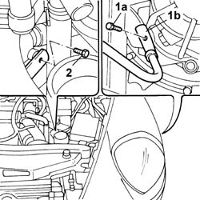
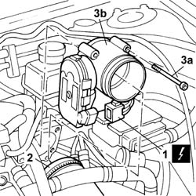
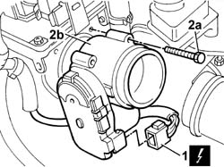

1056B14 THROTTLE CASING - R.R.
- Path
- Procedures > 10 ENGINE > 1056 PETROL FUEL INJECTION SYSTEM > 1056B MULTI-POINT INJECTION SYSTEM (MPI) > 1056B14 THROTTLE CASING - R.R.
- Kind
- repair procedure (removal / refitting; the operation number is the code)
- Applies to
- engines: 2.0 TB, 2.4 20V, 3.0 V6, 3.2 V6; all production periods
- Interactive page
- https://sloeber94.github.io/elrnDB-lThss/en/#/75016
Applies to: engines: 2.0 TB; all production periods
 Removing
Removing
 Refitting
RefittingSee in Op. 7040D50 ENGINE COMPARTMENT UPPER SOUND INSULATION SHIELD - R.R.
See in Op. 1016A40 Ignition COIL COVER on cylinder head - R.R.
See in Op. 1048A50 air inlet pipe to turbocharger - r + r
See in Op. 1048A21 AIR INLET HOSE FROM INTAKE TO FILTER - R.R.
 | Description | Connector |
|---|---|---|
Earth on engine | C040 |

Applies to: engines: 2.0 TB; all production periods
| Description | Connector |
|---|---|---|
Integrated throttle casing actuator | N075 |

Applies to: engines: 2.0 TB; all production periods
Refitting
Removing | Description | Connector |
|---|---|---|
. | Integrated throttle casing actuator | N075 |
| Description | Connector |
|---|---|---|
. | Earth on engine | C040 |
See in Op. 1048A50 air inlet pipe to turbocharger - r + r
See in Op. 1048A21 AIR INLET HOSE FROM INTAKE TO FILTER - R.R.
See in Op. 1016A40 Ignition COIL COVER on cylinder head - R.R.
See in Op. 7040D50 ENGINE COMPARTMENT UPPER SOUND INSULATION SHIELD - R.R.
Applies to: engines: 2.4 20V; all production periods
Removing
Refitting- Make sure that the ignition key is in the OFF position, then disconnect the negative battery terminal.
See in Op. 7040D50 ENGINE COMPARTMENT UPPER SOUND INSULATION SHIELD - R.R.
See in Op. 1016A40 Ignition COIL COVER on cylinder head - R.R.
See in Op. 1048A28 vacuum air circuit resonator pipe - r+r
See in Op. 1048A48 HOSE BETWEEN RESONATOR AND THROTTLE CASING - R.R.
1. Disconnect the electrical connection for the integrated throttle casing actuator.
| Description | Connector |
|---|---|---|
1 | Integrated throttle casing actuator | N075 |
2. Undo the bolts (2a) and remove the throttle casing (2b) complete with gasket.

Applies to: engines: 2.4 20V; all production periods
Refitting
Removing- Proceed with the refitting as described below.
- Position the throttle casing complete with gasket in its housing and secure it using the bolts.
- Connect the electrical connection for the integrated throttle casing actuator.
| Description | Connector |
|---|---|---|
. | Integrated throttle casing actuator | N075 |
See in Op. 1048A48 HOSE BETWEEN RESONATOR AND THROTTLE CASING - R.R.
See in Op. 1048A28 vacuum air circuit resonator pipe - r+r
See in Op. 1016A40 Ignition COIL COVER on cylinder head - R.R.
See in Op. 7040D50 ENGINE COMPARTMENT UPPER SOUND INSULATION SHIELD - R.R.
- Connect the negative battery lead.
Applies to: engines: 3.0 V6, 3.2 V6; all production periods
Topics linked from this page (8)
- 1016A40 Ignition COIL COVER on cylinder head - R.R.
- 1048A21 AIR INLET HOSE FROM INTAKE TO FILTER - R.R.
- 1048A28 vacuum air circuit resonator pipe - r+r
- 1048A48 HOSE BETWEEN RESONATOR AND THROTTLE CASING - R.R.
- 1048A50 air inlet pipe to turbocharger - r + r
- 1056B17 THROTTLE CASING WITH D.V.L. - R.R.
- 1056B81 CARRYING OUT SELF-LEARNING PROCEDURE FOR BASIC ELECTRONIC INJECTION/IGNITION (SINGLE) CONTROL UNIT
- 7040D50 ENGINE COMPARTMENT UPPER SOUND INSULATION SHIELD - R.R.
Topics that link to this page (8)
- 1056B87 INJECTION/IGNITION CONTROL UNIT MOUNTING - R.R.
- 1072B10 INTAKE MANIFOLD - R.R. and Replace gasket
- 1072B54 HOSES CONNECTING AIR CHAMBER TO INTAKE MANIFOLD(S) - R.R.
- 1072D50 DEVICE (V.I.S.) with adjustable air ducts - R.R.
- 1088D36 CONNECTOR ON CRANKCASE FOR CYLINDER HEAD/CRANKCASE WATER CIRCUIT HOSE WITH THERMOSTAT CLOSED - R.R.
- 1088D38 CYLINDER HEAD/CRANKCASE WATER CIRCUIT HOSE WITH THERMOSTAT CLOSED - R.R.
- 2130A70 Rubber hose with built in flexible pipe for directing coolant to automatic transmission oil heat exchanger
- 5510C45 DETONATION SENSOR (one- remaining) R.R. after Op. 5510C44